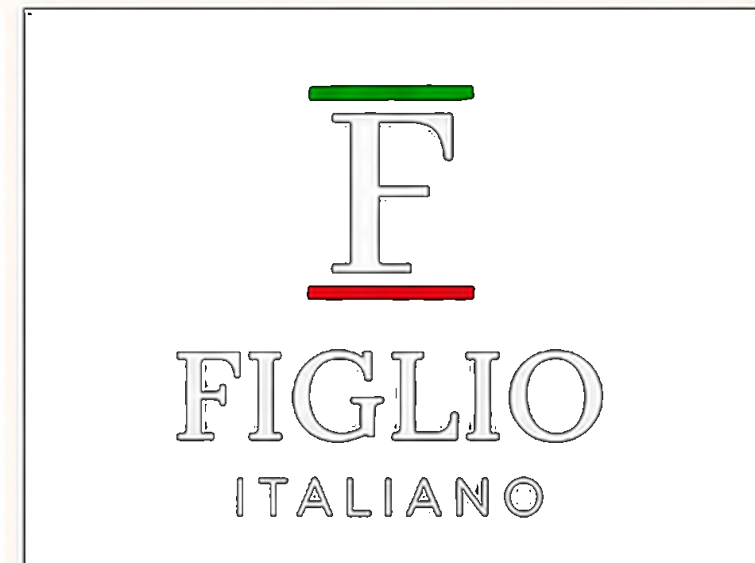
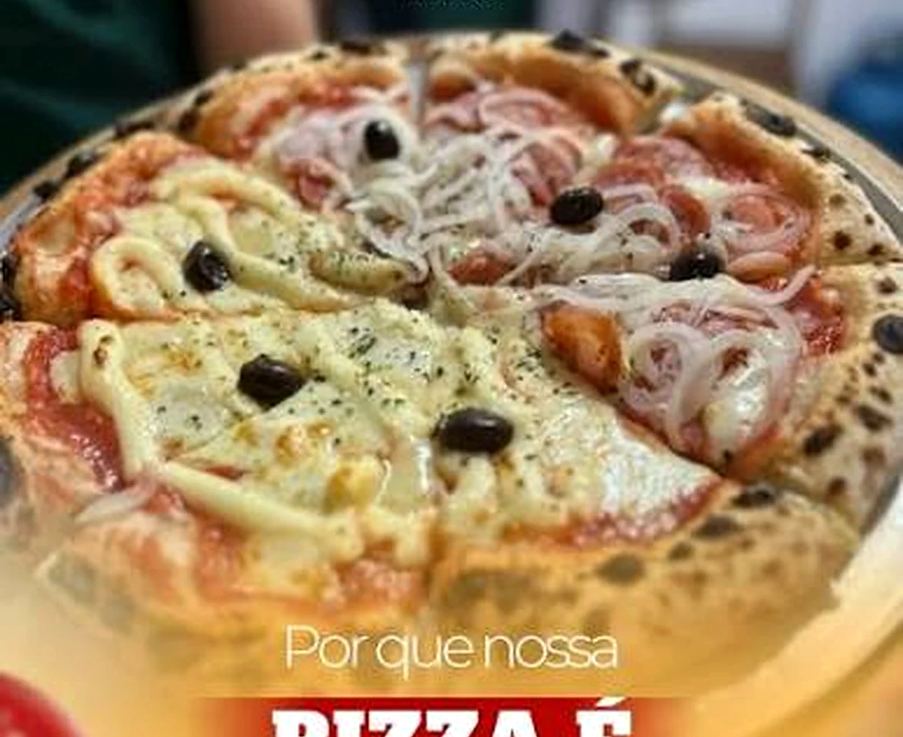

Pedido sem conferência
Pizza, bebida e observações precisam sair juntos.

Proposta premium de retomada do delivery
A Figlio cuida da pizza. A Osasco Express cuida pra essa experiência chegar com controle, segurança e o padrão que a marca já tem.
🎁 Treinamento presencial da equipe (R$ 799,00) sai por conta da casa pra quem fechar até 10/07/2026.

O que aconteceu antes
A Figlio Italiano já sentiu o peso de uma operação de delivery sem o controle necessário. Quando existe extravio de bebidas, pizza chegando incompleta ou desgaste com o cliente final, o problema deixa de ser apenas logístico: ele passa a atingir a percepção da marca.
Dor do delivery premium
Como funciona na prática
A proposta não é colocar alguém na porta da loja. É organizar o fluxo do delivery para reduzir ruído, registrar ocorrências e dar mais previsibilidade.
Retorno prático
Uma operação organizada não elimina todos os imprevistos, mas reduz improviso, melhora comunicação e cria registro para tratar problemas com mais clareza.
Pizza, bebida e observações precisam sair juntos.
Mais clareza sobre retirada, rota e ocorrência.
Mais informação para apoiar o atendimento da loja.
Entrega da casa, iFood e 99Food dentro do fluxo certo.
Implantação
A ativação começa depois da assinatura, envio das informações operacionais e validação dos canais. A ideia é iniciar com processo, não com improviso.
Condição promocional — só até 10/07
Fechando até 10/07/2026, o treinamento presencial da equipe entra sem custo na implantação inicial. Depois dessa data, esse valor volta a ser cobrado à parte.
Condição válida para a primeira implantação da operação. Novos treinamentos, reciclagens futuras ou novas unidades dependem de novo ajuste entre as partes.Condições comerciais
Diária e taxa por km na tela, sem precisar clicar pra descobrir. Só o detalhe fino fica no acordeão, pra não virar tabela gigante no celular.
Quando houver chuva ou condição de risco, o adicional é aplicado somente nas entregas do período informado — não incide sobre diárias, janelas operacionais ou outros valores. Ativação e encerramento comunicados pela Osasco Express no canal oficial.
Organização, acompanhamento, canais, demonstrativos, suporte e estrutura operacional.
Contrato
O contrato formaliza a prestação comercial entre empresas independentes, responsabilidades operacionais, canais oficiais, valores, forma de pagamento, limites da prestação, proteção de dados, assinatura eletrônica e condições de ativação.
WhatsApp 11 92478-2555
A pizza continua sendo da Figlio. A entrega passa a ter o mesmo padrão dela.
Avançar com a proposta agora